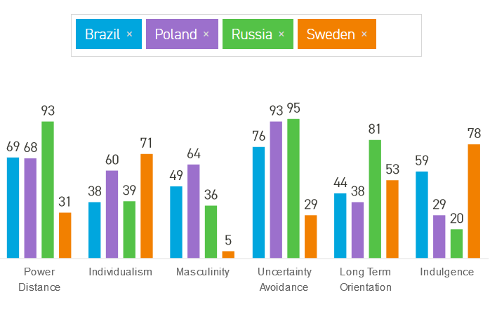
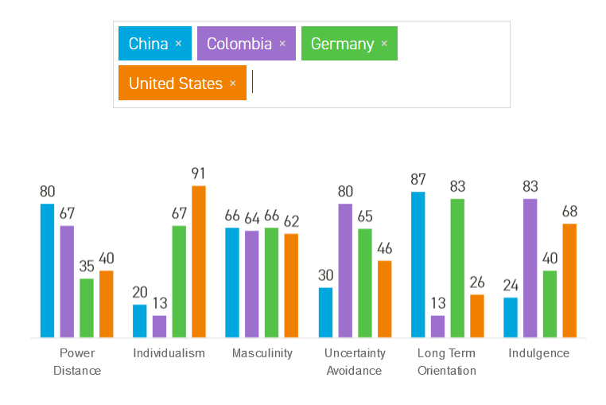

Wymiary kultury – badania Geerta Hofstede
- Początek badań na przełomie lat 60-tych i 70-tych
- Hofstede zebrał dane na temat wartości pracowniczych od 117 000 pracowników IBM z 50 krajów
- Na podstawie analiz statystycznych wyłonił 5 wymiarów, na których różnili się jego respondenci
- Badania rozwijane do dziś
Wymiary kultury - dystans władzy
- Jak bardzo członkowie kultury o mniejszej władzy akceptują i spodziewają się tego, ze władza jest dystrybuowana nierówno
- W kulturach o wysokim dystansie władzy obecność silnej hierarchii jest spodziewana i nikt z tym nie dyskutuje
- Kultury o niższym dystansie władzy promują wartości egalitarne i demokratyczne
Wymiary kultury - Dystans władzy – top 5
- Najwyższy: Malezja, Słowacja, Gwatemala, Panama, Filipiny
- Najniższy: Irlandia, Nowa Zelandia, Dania, Izrael, Austria
- Polska na 25 miejscu na 69
Wymiary kultury - Indywidualizm vs kolektywizm
- Kolektywizm to poziom, z jakim jednostki są połączone w grupy
- W kulturach indywidualistycznych nacisk jest położony na indywidualne osiągnięcia i prawa jednostki. Ludzie muszą troszczyć się sami o siebie i swoich najbliższych
- W kulturach kolektywistycznych najważniejsze jest dobro grupy. W grupach pozostaje się najczęściej przez całe życie. Dobro grupy przedkładane jest nad dobro jednostki
Wymiary kultury - Indywidualizm vs kolektywizm – top 5
- Najwyższy indywidualizm: USA, Australia, Wlk.Brytania, Kanada, Holandia
- Najniższy indywidualizm: Kolumbia, Wenezuela, Panama, Ekwador, Gwatemala
- Polska na 18 miejscu na 69
Wymiary kultury - Unikanie niepewności
- Stopień w jakim dana kultura toleruje niepewność i dwuznaczność. Niepewność jest tu traktowana jako mechanizm radzenia sobie z lękiem.
- Kultury o wysokim unikaniu niepewności promują precyzyjne planowanie, krok po kroku. Posiadają rozbudowany system zasad i praw, którego celem jest unikanie niespodziewanych sytuacji.
- Kultury o niskim unikaniu niepewności tolerują sytuacje dwuznaczne i nieplanowane, starają się mieć jak najmniej zasad i praw, są bardziej otwarte na zmianę
Wymiary kultury - Unikanie niepewności – top 5
- Najwyższe: Grecja, Portugalia, Gwatemala, Urugwaj, Belgia
- Najniższe: Szwecja, Hongkong, Dania, Jamajka, Singapur
- Polska: 7 miejsce na 69
Wymiary kultury - Męskość vs Kobiecość
- Męskie kultury promują tradycyjnie męskie wartości: asertywność, konkurencyjność, materializm, ambicjonalność, władzę.
- Kobiece kultury promują jakość życia i związki międzyludzkie.
- Problem z nomenklaturą – Hofstede użył tu stereotypów zachodnich odnośnie ról płciowych. W nowszych ujęciach ten wymiar nazywa się Quality of Life vs Quantity of Life
Wymiary kultury - Męskość vs Kobiecość – top 5
- Najwyższa męskość: Słowacja, Japonia, Węgry, Austria, Wenezuela
- Najwyższa kobiecość: Kostaryka, Dania, Holandia, Norwegia, Szwecja
- Polska 12 na 69
Wymiary kultury - Orientacja długoterminowa vs Krótkoterminowa
- Opisuje specyficzną dla danej kultury orientację czasową – nastawienie na długoterminową lub krótkoterminową perspektywę
- Kultury z orientacją długoterminową nastawione są na oszczędność, zdolność adaptacji, nieustępliwość (persistance)
- Kultury o orientacji krótkoterminowej skupione są na teraźniejszości i niedalekiej przyszłości. Cenią wartości takie jak szacunek dla tradycji, ochrona „twarzy”, stabilna osobowość.
Wymiary kultury - Orientacja długoterminowa – top 5
- Długoterminowe: Chiny, Hongkong, Taiwan, Japonia, Wietnam
- Krótkoterminowe: Hiszpania, Filipiny, Czechy, Pakistan
- Polska 17 na 45.
Wymiary kultury - nowość - Pobłażliwość vs. Zahamowanie (Indulgence vs. Restraint)
- Pobłażliwe są społeczeństwa w których gratyfikuje się podstawowe i naturalne ludzkie popędy związane z czerpaniem przyjemności z życia
- Zahamowane są społeczeństwa w których hamuje się gratyfikację potrzeb poprzez ścisłe normy społeczne
- (cyt. ze strony Hofstede, tłum. KB)
Przykładowe porównania w modelu Hofstede

Przykładowe porównania w modelu Hofstede

Wymiary kultury - Krytyka modelu Hofstede
- Wątpliwości metodologiczne – próba pracowników korporacji, krajowy poziom analizy, nie do końca jasna metodologia statystyczna
- Wymiary kultury „przypadkowo odkryte i przypadkowo nazwane”
- Problemy z jasnym zdefiniowaniem wymiarów (oprócz dystansu władzy, dobrze opisanego przez Hofstede)
- Męskość vs kobiecość ???